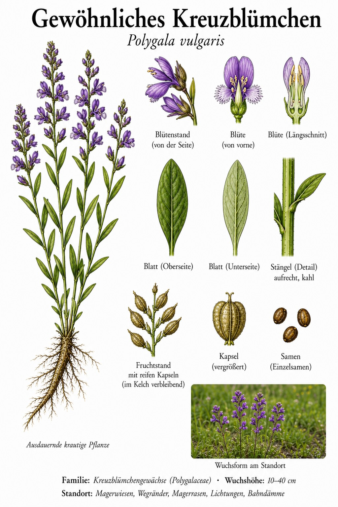
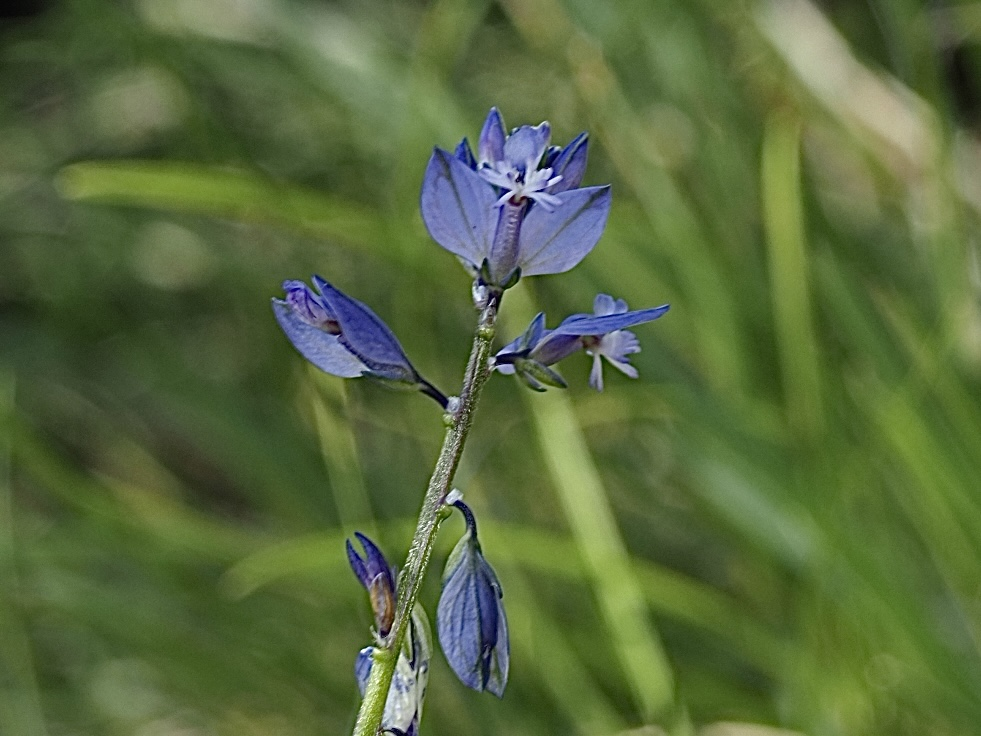
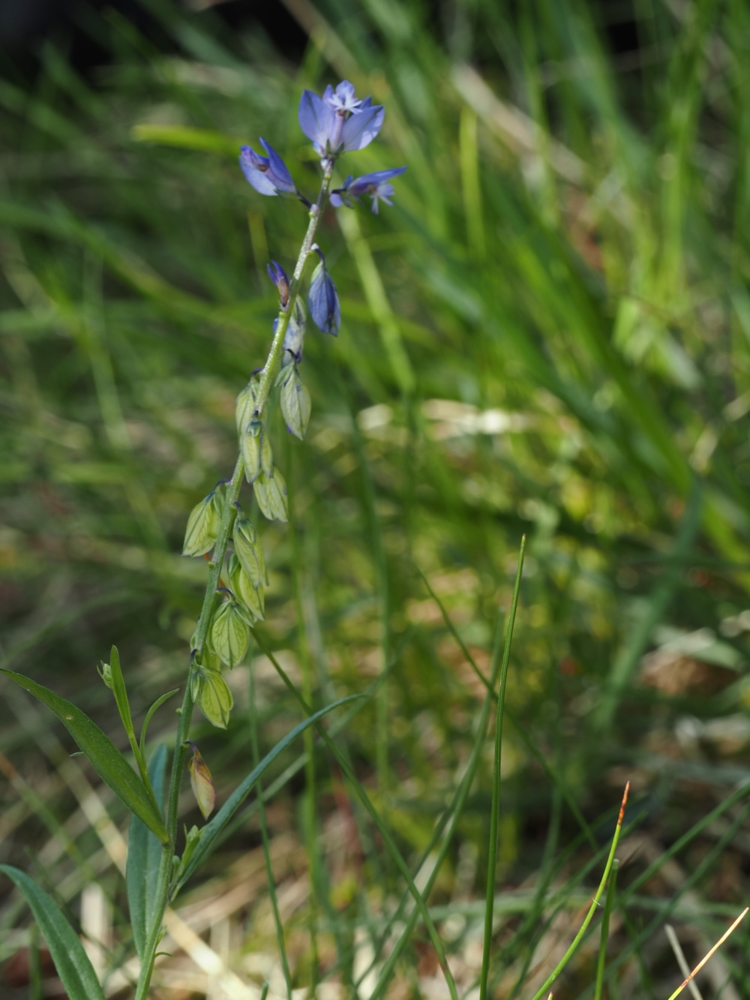

Kleine blaue Kostbarkeiten im Magerrasen – mit Blüten wie winzige Vögelchen.



Blaue Juwelen im kurzen Rasen
Ab Mai leuchten die kleinen, meist tiefblauen Blüten des Kreuzblümchens in lockeren Trauben über dem kurzen Rasen. Auffällig sind die beiden seitlichen Kelchblätter, die als gefärbte „Flügel“ ausgebildet sind und die eigentliche Blüte umrahmen. Die zierliche, ausdauernde Pflanze wächst auf Magerwiesen, Magerrasen, an Wegrändern, Lichtungen und Bahndämmen.
Kreuzblümchen mit altem Ruf
Der Gattungsname Polygala bedeutet „viel Milch“ – früher glaubte man, die Pflanze fördere bei Weidetieren die Milchbildung. Die Blütenfarbe schwankt von tiefblau über rosa bis weiß, was die Bestimmung erschweren kann. Verlässlich bleibt der Bau der Blüte mit ihren auffälligen Flügeln.
Wissenswertes & Merksätze
Geflügelte Blüte
Die beiden großen, gefärbten Seiten-Kelchblätter („Flügel“) sind das sicherste Erkennungszeichen des Kreuzblümchens.
Farbe ist keine Garantie
Blau, rosa oder weiß – die Blütenfarbe variiert stark. Verlass dich lieber auf den Bau der Blüte als auf die Farbe.